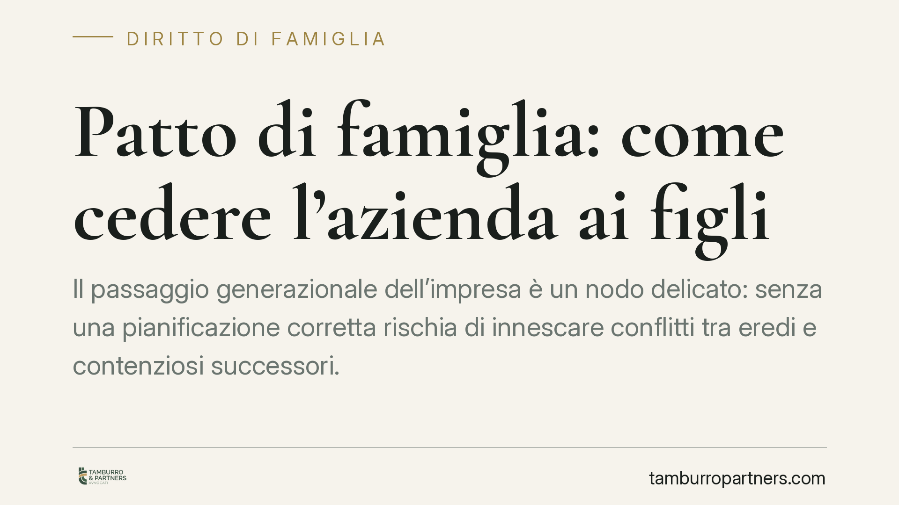

Patto di famiglia: come cedere l'azienda ai figli
Il passaggio generazionale dell'impresa è un nodo delicato: senza una pianificazione corretta rischia di innescare conflitti tra eredi e contenziosi successori. Il patto di famiglia, disciplinato dall'art. 768-bis del codice civile, offre uno strumento dedicato. La recente Cass. 4376/2026 ne ha ribadito i requisiti essenziali: funzione di stabilità aziendale e forma solenne a pena di nullità.

Inquadramento normativo
Il patto di famiglia è il contratto con cui l'imprenditore trasferisce, in tutto o in parte, l'azienda (o le partecipazioni societarie) a uno o più discendenti. La fonte è l'art. 768-bis cod. civ., introdotto nel 2006 proprio per agevolare il passaggio generazionale dell'impresa.
La sua funzione tipica è assicurare la continuità e la stabilità dell'attività produttiva. Non si tratta quindi di una semplice donazione: il patto deroga al divieto di patti successori (art. 458 cod. civ.) e sottrae l'azienda ceduta alle future azioni di riduzione e collazione. In altri termini, ciò che passa oggi ai figli imprenditori non verrà rimesso in discussione alla morte del disponente.
La Corte di Cassazione, con la sentenza 4376/2026, ha ribadito due condizioni imprescindibili. La prima è la forma: il patto deve essere stipulato per atto pubblico davanti al notaio, a pena di nullità (art. 768-ter cod. civ.). La seconda è la funzione di stabilità aziendale: lo strumento non può essere piegato a fini meramente liquidatori o elusivi, ma deve mirare effettivamente alla prosecuzione dell'impresa da parte del discendente assegnatario.
Il nodo dei conguagli ai legittimari
Al patto devono partecipare non solo il disponente e i discendenti assegnatari, ma anche il coniuge e tutti gli altri legittimari che sarebbero eredi se la successione si aprisse in quel momento (art. 768-quater cod. civ.).
Chi riceve l'azienda deve liquidare agli altri legittimari una somma corrispondente al valore della loro quota di legittima, salvo che vi rinuncino. Il conguaglio può essere pagato in denaro oppure, con accordo, in natura.
Questo meccanismo è il cuore dell'operazione: evita che chi non entra nell'impresa resti privo di tutela e, allo stesso tempo, cristallizza i valori. Ciò che è stato attribuito e liquidato con il patto non si imputa alla successione né si rivaluta: questa è la ragione pratica che rende lo strumento più stabile di una donazione.
Implicazioni pratiche per l'imprenditore
Per chi gestisce un'impresa familiare, il patto di famiglia significa poter scegliere oggi il successore senza attendere l'apertura della successione, riducendo il rischio di frammentazione tra più eredi.
Il beneficio decisivo è la prevedibilità: i valori sono fissati al momento dell'atto e non sono soggetti alle sorprese del momento successorio. Per il figlio assegnatario questo significa certezza sulla titolarità dell'azienda; per gli altri legittimari, una liquidazione immediata e definita.
Attenzione però ai limiti. Il patto non vincola i legittimari sopravvenuti dopo la stipula (ad esempio un figlio nato successivamente), che conservano diritti da far valere. Inoltre, se manca anche solo una delle parti necessarie o difetta la forma pubblica, l'intero accordo è nullo e non produce alcun effetto: un errore che può vanificare l'intera pianificazione.
Sul piano fiscale, il trasferimento di azienda o partecipazioni ai discendenti può godere di agevolazioni, a condizione che l'assegnatario prosegua l'attività o mantenga il controllo per un periodo minimo. Vanno verificati caso per caso i presupposti di legge.
Cosa fare in concreto
- Mappate i legittimari attuali: individuate coniuge, figli e ogni altro soggetto che parteciperebbe alla successione, perché tutti devono intervenire nel patto.
- Fate valutare l'azienda da un professionista indipendente: il valore stimato è la base per calcolare i conguagli e previene future contestazioni.
- Rivolgetevi al notaio: senza atto pubblico il patto è nullo. Non esistono scorciatoie in forma privata.
- Definite modalità e tempi del conguaglio ai legittimari non assegnatari, valutando se pagarlo in denaro, in natura o con rinuncia espressa.
- Verificate i presupposti delle agevolazioni fiscali e gli impegni di prosecuzione dell'attività prima di firmare, per non perdere i benefici.
Consigliamo di affrontare l'operazione con un'analisi preventiva della situazione familiare e patrimoniale complessiva: il patto di famiglia è efficace quando si inserisce in una strategia coordinata di passaggio generazionale, non come atto isolato.
Disclaimer
Contributo informativo a cura di Tamburro & Partners - Avv. Giuseppe Tamburro. Non costituisce parere legale.
Ogni famiglia ha il suo equilibrio.
Separazione, divorzio, affidamento, assegno: se vuoi un confronto riservato su una specifica situazione, scrivi allo studio. Ti rispondiamo entro un giorno lavorativo.